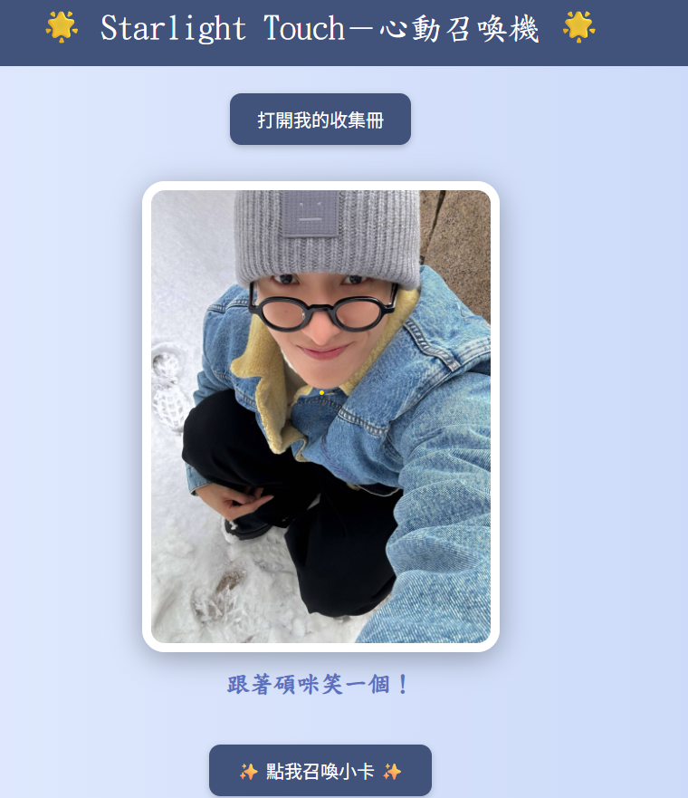

大家都愛收集偶像小卡，常常心癢想買更多！
「Starlight Touch」讓你用手勢互動，輕鬆召喚偶像祝福和驚喜彩蛋
滿足你想收藏的渴望，帶來全新的趣味體驗

將偶像與粉絲的互動從單向觀看升級成雙向交流的沉浸式體驗
透過直覺且充滿趣味的手勢操作，讓每一位粉絲彷彿能「召喚」偶像的祝福與神秘彩蛋
打造專屬於你的互動小型展演
結合視覺特效、音效與動畫，讓愛的能量從螢幕中閃耀出來，連結你與偶像的心
以下為系統執行畫面截圖：
👉你也想試試看？召喚你的心動吧